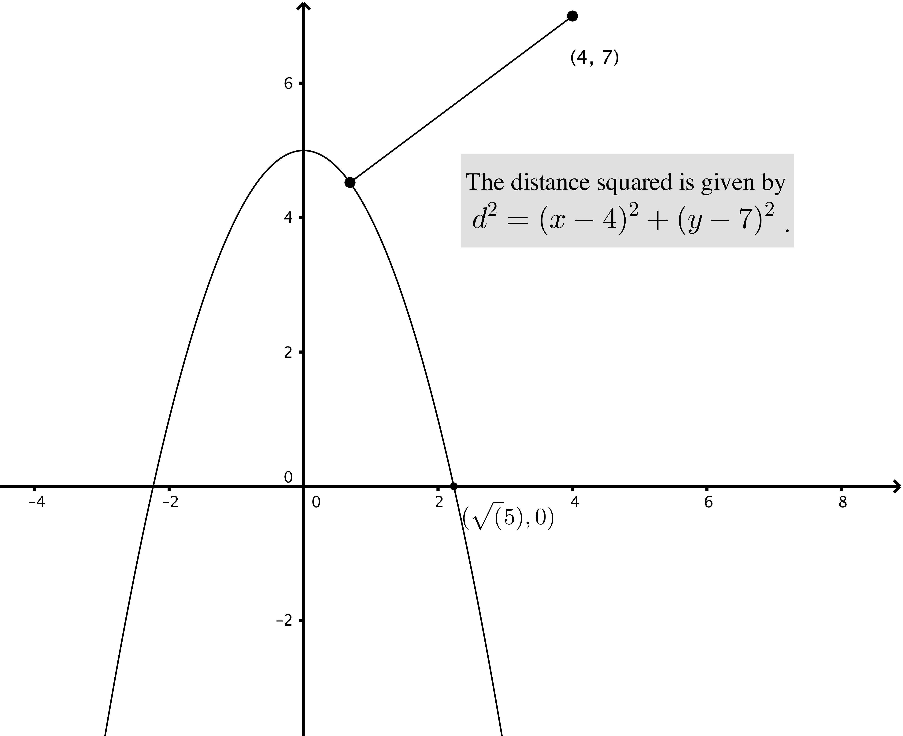

We have “to minimize \(d \iff \) to minimize \(d^2\)”.
Objective function:
\begin{align*} d^2 = (x-4)^2 + (y-7)^2 \mbox { and } y = 5 - x^2 &\implies d^2 = (x-4)^2 + \left ((5 - x^2) -7 \right )^2\\ &\implies f(x) = (x-4)^2 + (x^2 + 2)^2 \end{align*}
We may assume \(\mbox {Domain}(f) = [0, \sqrt {5}]\).
Critical points:
\begin{align*} f'(x) &= 2(x-4) + 2(x^2 + 2) \cdot 2x\\ &= 4x^3 + 10x - 8. \end{align*}
\(f'\) is defined everywhere on \((0, \sqrt {5}) \implies \) critical points only occur where \(f'(x) = 0\):
\begin{align*} f'(x) = 0 &\iff 4x^3 + 10x - 8 = 0\\ \text {using a calculator to find an approximate value of}\ x &\implies x \approx 0.67628 \end{align*}
Find global minimum:
\begin{align*} f(0) &= 20\\ f(0.67628) &\approx 17.1\\ f(\sqrt {5}) &\approx 52.1\\ &\implies \mbox {global minimum at $x \approx 0.67628$} \end{align*}